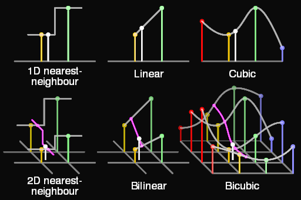
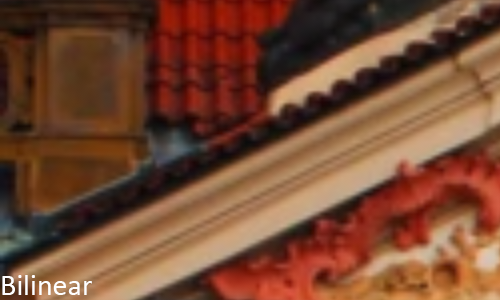
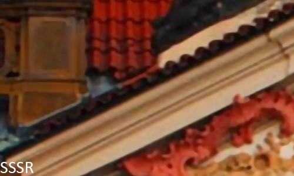
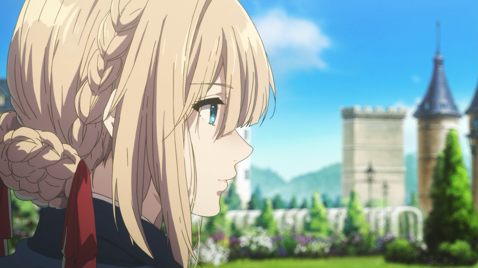

Introduction
This work aims to mathematically quantify image quality and performance of different real-time upscaling algorithms.
Before attempting to reproduce, make sure to grab the latest version of mpv and updated user shaders. You can get the shaders from bjin and igv (FSRCNNX)/igv (SSSR).
UPDATE - 25/02/2019: Initial version of the Chroma section is added. I'll take some time to slowly polish it with more information and different tests, and I'm also probably going to add PSNR-HMA to the RGB tests soon.
UPDATE - 20/02/2019: IW-SSIM tables added.UPDATE - 19/02/2019: MS-SSIM tables fixed, code had issues with RGB -> greyscale conversion.
UPDATE - 18/02/2019: Lanczos added, and tables now display results from best to worst.
UPDATE - 16/02/2019: Other EWA scalers were added.
UPDATE - 22/12/2018: I found out a mistake in previous results, and have once again updated all quality comparison results.
I'm not certain about what was causing the problems, but turning off PNG filtering and debanding seems to have fixed it. I'll investigate which of the two was the culprit once I have the time.
Well, since I had to redo everything, I took this opportunity to improve the testing methodology, debanding was turned off to prevent loss of detail, and I used a lossless
YUV444P AVC encode as upscaling source instead of a YUV444P JPEG.
UPDATE - 18/12/2018: Results have been updated with latest versions of FSRCNNX and Waifu2x. On top of that, I've included MS-SSIM and PSNR-HVS-M measurements. I've also included all NGU algorithms from MadVR since people are interested on them, though NGU-AA performs poorly due to half-pixel shifts.
If all you want is to look at the results, follow this link.
What is upscaling?
Like its name implies, upscaling is simply increasing the scale of something. More specifically, taking discrete information in a given scale and finding values between the existing samples. The easiest and most classic way of doing this is through simple linear interpolation, if you want to find a value between two points you can simply draw a line between them and linearly find any value in this line. If you wanted to find the value that's placed exactly in the middle of those 2 discrete points, you could simply do an arithmetic mean with their values to find your answer.
Linear interpolation can be done in a plane, through both axis, creating what we call "bilinear" interpolation. Bilinear interpolation is the simplest interpolation algorithm, easiest to calculate and also unironically the most used one in the industry due to the fact that it's extremely simple to implement.
But can something as simple as just drawing a line between 2 known discrete points give us good results? It depends entirely on how the original information looked like. We can however, increase the complexity of our upscaling algorithm by increase the amount of information it takes into consideration in order to find values between our discrete points. In this page we'll evaluate what we can do differently, how much better our results can get and how it affects our performance.
Polynomial interpolation

A relatively simple way of taking more information into consideration when finding values between discrete points is to use
more than just the information of 2 points to calculate a function that connects them. We can trace a polynomial
curve between points if we take into account the information of neighbouring elements, calculating the gradients
and therefore becoming able to connect them with curves instead of lines. The shape of the curve connecting points
depends on the windowing and scaling functions used.
Structural Similarity Upscaling

We can more precisely upscale something if we try to reconstruct strucutures, the most evident problem with linear or polynomial scalers is the thickening of border areas where the interpolated result doesn't transit between values as sharply, resulting in a blurrier image with "lost" detail in the strucutures if you're downscaling and then upscaling it back.
Convolutional Neural Networks
Another way of trying to "recover" lost information through upscaling is using neural networks that firstly go through a training phase so it can "learn" how to upscale. The training phase consists of analysing a set of images, and then setting parameters that will be used when upscaling. Note that upscaling isn't exactly recovering information, all we're doing is coming up with "new" information based on what we already have.
There are multiple different ways of using neural networks to upscale images, and there are multiple different algorithms that aim to do pretty much the same thing. To make it more practical, we'll stick to algorithms that can be easily tested as user-shaders using mpv, with the adition of the extremely popular Waifu2X and NGU from MadVR.
We'll test the following algorithms:
Testing methodology
Performance measurements were done upscaling an animation video encoded into 8bit AVC from 1280x720 to 2560x1440. Utilising mpv with a benchmarking profile, all settings from profile=gpu-hq, fixing scalers that do half-pixel shifts (with the exception of NGU-AA, since as far as I know there's no option to fix it in MadVR), with Vulkan as the renderer and hardware decoding turned off. The machine used has an Ivy Bridge i5 3470, a Polaris RX 470 and user shaders were always compute shaders when possible.
Quality measurements were done in 2 test images, one from animation and another one from live action. Debanding was turned off to prevent loss of fine detail, and so was mpv's PNG screenshot filtering.
The reasoning behind this comes from the fact that the live action image has more high frequency components that are harder to "restore". In order to measure how "good" each algorithm is, the test images were previously bicubic downscaled to a quarter of their original resolutions (0.5x scaling factor in both axes), and then upscaled back to their original resolutions with a direct 2x upscaling factor (2x in both axes outputs a resolution that's 4x larger in pixels). Every single scaler was tested on an YUV444P lossless AVC encode, which can be found on the repository.
Performance was evaluated simply in frames per second, while quality was evaluated in PSNR, SSIM, PSNR-HVS-M and MS-SSIM.
Testing and results
The following image was used for the animation upscaling testing:
Before we continue to the results, you can find all images in this repository.
We can see the results below:
The following image was used for the live-action upscaling testing:
Again, you can find all the images in this repository.
We can see the results below:

We can clearly see that in general, neural network based scalers tend to give better quality, though as expected they're also more computationally expensive. We can see that FSRCNNX is clearly the best scaler you can use on mpv when it comes to quality, and MadVR's NGU displays similar results.
All NGU algorithms were tested on their highest quality presets (Very High), which was still fine on the RX470 but way more computationally expensive than FSRCNNX-8-0-4-1. Performance of FSRCNNX-16-0-4-1 is also relatively okay, but the quality difference over its lighter variant is small. FSRCNNX-56-16-4-1 and FSRCNNX-GAN-FORSCIENCE-56-16-4-1 are not worth it.
NNEDI3, Ravu and SSSR are mostly pointless, in my opinion FSRCNNX-8-0-4-1 looks better, or sharper if you prefer to use this term, while performing extremely well.
If you're using MadVR, I think both NGU-STANDARD and NGU-SHARP look great as long as your system can handle them, and you can choose whichever you like the most.
While I'm providing numerical test results to mathematically evaluate how those different algorithms perform, I strongly advise to take a look on how the upscaled images actually end up looking like. The viewer has his/her own preference regarding different drawbacks like aliasing, ringing or blurring for example. Some people might prefer an algorithm that scores relatively poorly when compared to sharper choices, but you should please yourself while consuming your media.